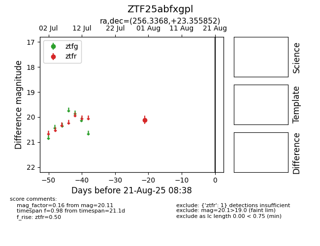

Target ZTF25abfxgpl at 2025-08-21 08:38, see:
FINK: fink-portal.org/ZTF25abfxgpl
Lasair: lasair-ztf.lsst.ac.uk/objects/ZTF25abfxgpl
ALeRCE: alerce.online/object/ZTF25abfxgpl
alt names
ZTF25abfxgpl (ztf,alerce)
coordinates:
equatorial (ra, dec) = (256.3368,+23.35585)
galactic (l, b) = (44.3493,+33.06782)
photometry
last ztfr=20.11
1 ztfr detections
